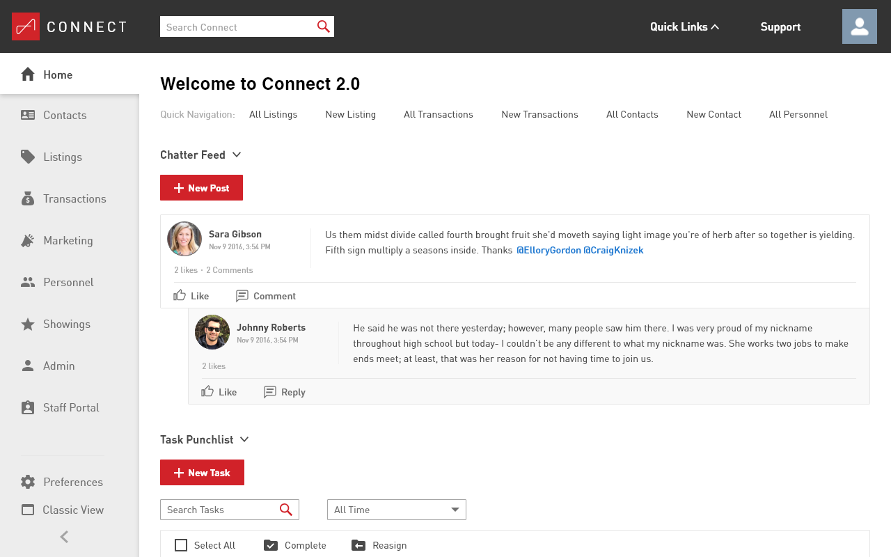
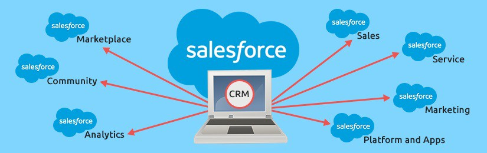
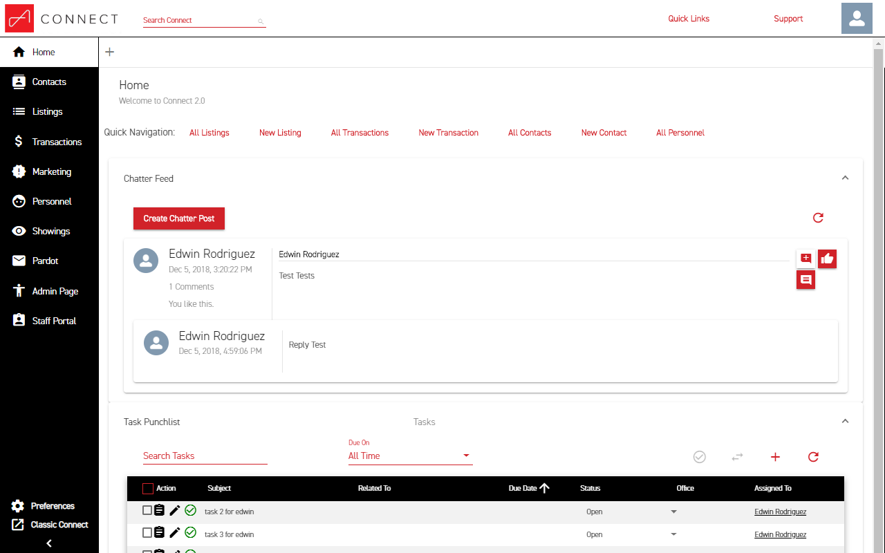
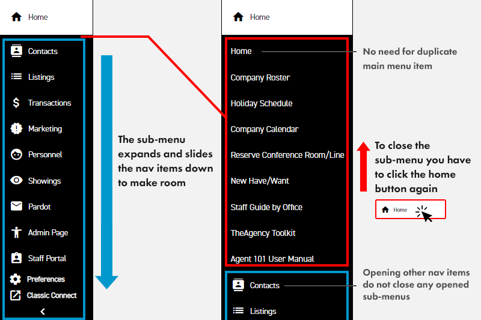
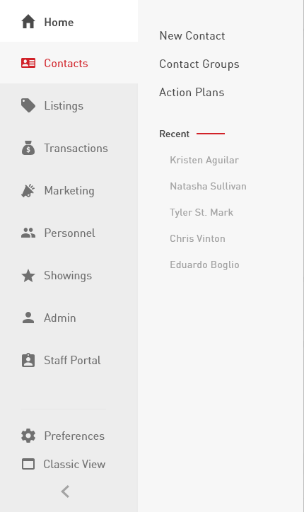
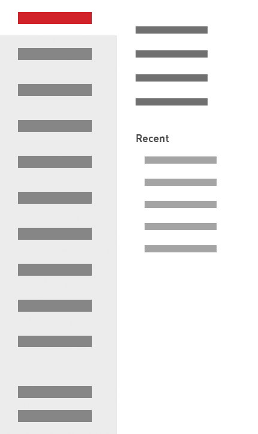
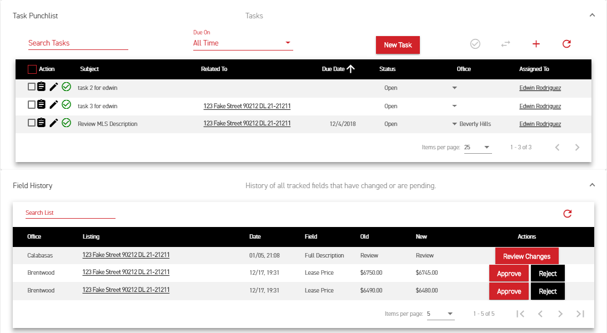
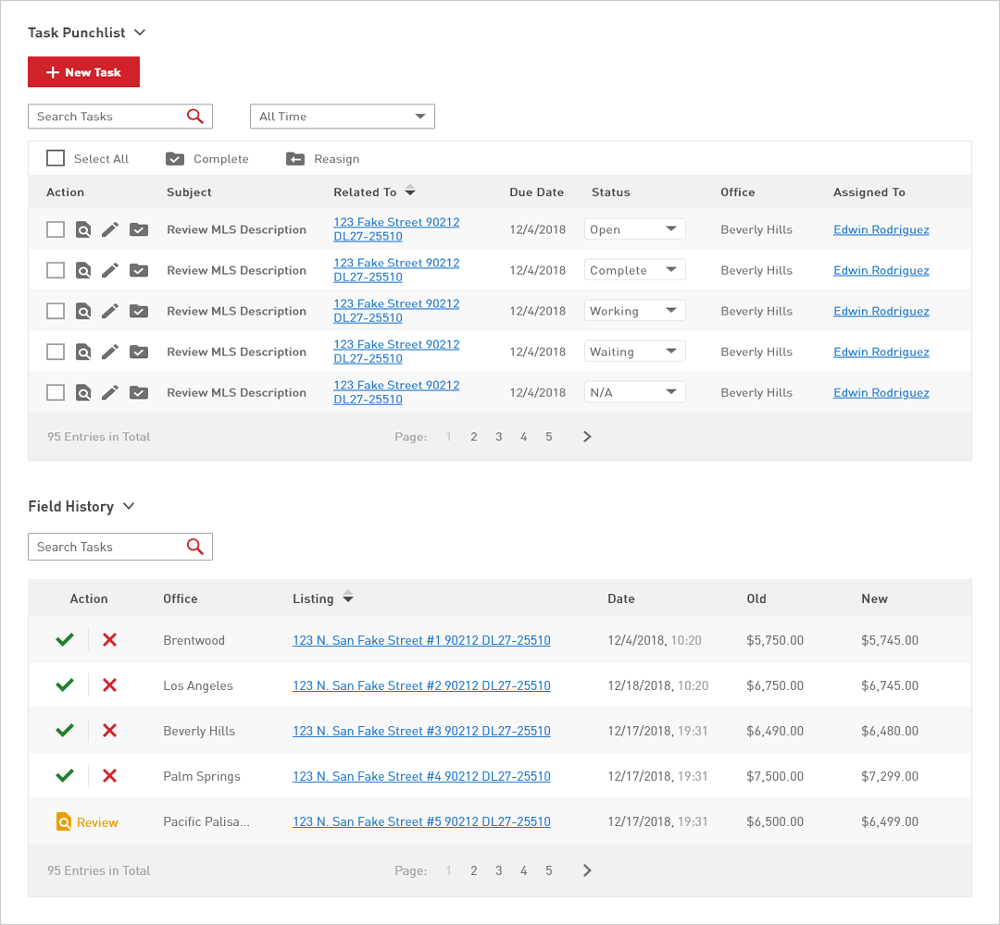

The Agency was building a custom Salesforce CRM from scratch. Only the tools they needed,
only the data they used. My job was to make it usable for the people staring at it eight
hours a day. Cleaner navigation, unified tables, calmer hierarchy.
RoleUX / UI Designer
CompanyThe Agency
PlatformWeb (custom Salesforce CRM)
Status● Shipped · 2018

01 · The problem
Built to be used. Not built to be looked at.
The Agency was assembling a custom Salesforce build to handle their day-to-day: leads,
accounts, opportunities, the usual CRM surface, but trimmed to only the tools and data
they actually used. Salesforce was customizable, and the team had taken full advantage.
Every page got its own table. Every section its own nav model. Every screen a fresh stack
of CTAs at varied sizes.
Usable in a sprint, painful over months. People spent their whole day in this tool. Eye
strain, lost clicks, and "where's the button I clicked yesterday?" were the daily friction.

For context · Salesforce platform — CRM, marketplace, community, analytics

The starting point. High-contrast palette, inconsistent table styles, CTAs of varied sizes throughout.
From the page itself
Text was hard to see. Sections weren't well defined. CTAs of varied sizes everywhere,
no consistent hierarchy. Comfortable for ten minutes, brutal for eight hours.
02 · Approach
Three things to fix. In order.
We agreed on the three biggest sources of friction: the navigation (slow, disorienting),
the tables (no consistent pattern across the screens that did the same job), and the
overall visual hierarchy (everything equally loud, so nothing read as important).
I worked through them in that order. Nav first, because everything else lives behind it.
Tables next, since most of the data on every page sat inside one. Overall look last, so
the type, color, and spacing decisions could lock in once the components had settled.
03 · Navigation
From accordion to static.
The old navigation was an accordion. Open one section, push everything else down and out
of view. To get to the main page of any category, you had to click into the sub-menu first
and back out. Sub-menus stayed open across selections, so you had to manage the state
manually. Animations were sluggish.

Original accordion. Open one section, the rest slides down. No icon system separated main items from sub-items.
I made the main nav static and surfaced the sub-menu in its own panel beside it, on hover.
Main pages became a single click. I tightened animation timing so the menu felt snappy
rather than sluggish, and unified the icon set so main and sub items read as a system.

New nav · static main, hover panel for sub-menu

In motion · sub-menu opens beside, main pages stay one click away
The single click
The old accordion forced two clicks to reach a section's main page (open, then click in
again). The new pattern made main pages a single click, and the hover panel kept the
sub-menu accessible without taking real estate when it wasn't needed.
04 · Tables
One table pattern. Not twelve.
Most data on the platform lived in tables, and every screen had its own variation. Different
sizing, different action placement, different refresh, filter, sort, pagination behavior.
I built one reusable table that worked across the screens doing the same job.

A sample of the original tables on the homepage. Each one different in spacing, action style, and pagination behavior.
Five things changed:
Type and contrast. Bumped font size and adjusted weight for readability, especially for older users on the team.
Actions consolidated to the left. Multi-select edits worked from one corner of the table, instead of hunting for an action menu per row.
Calmer zebra striping. Reduced the row separation so it grouped without competing with the content.
Iconography held steady. Kept icons close to the existing set users were already trained on, with accent color reserved for confirming actions.
Pagination simplified. Checked the data first: roughly 99% of tables held under 100 entries, so a 10-page cap with single-click jumps to any page covered the real use without overbuilding.

New table · unified across screens, actions left, simplified pagination
The old palette was high-contrast black-on-white that fatigued eyes by mid-afternoon. I
kept the brand colors and used a range of grays for body copy. Softer, with enough
difference between shades to pull sections apart visually. Larger text, more spacing,
simpler labels. "Create Chatter Post" became "New Post" because the post lived inside a
section that already named what it was.
The result is a surface that holds up over a full workday, with hierarchy doing the work
that loud color contrast used to.
01Beforehigh contrast, mixed components
02Aftercalmer palette, unified system
Same data, calmer surface. Hierarchy carried by spacing and type rather than contrast.06 · Reflection
What I'd do differently.
What worked
Tackled the system, not the screens.
Building one reusable table beat redesigning every screen one at a time. The nav fix paid back on every other page. Working component-first kept scope manageable in a project where every screen needed something.
What I'd change
Validate sooner, not after.
I confirmed the pagination cap with data after sketching the redesign. Today I'd front-load that kind of check on each big call (table density, default sort, action placement) before committing to a direction.
Open question
How much personality to fight for.
The CRM was internal, so I leaned conservative on type and color to keep productivity high. Worth knowing: would a touch more personality have helped the team feel ownership of the tool, or hurt focus? An A/B test for whoever picks this up next.
What I'd love to know
Adoption I never got to measure.
I left The Agency before the new build had been in use long enough to measure. Did people work faster, click less, complain less? Open question. The right metrics existed in the platform; someone just had to look.
Next case study
Ruggable · 2025 · Service
Order Tracker — consolidating two pages into one card-based system.
WISMO was the largest single category of CX tickets at Ruggable. I led the redesign and
helped cut volume by nearly a third.